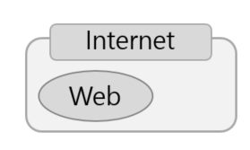

WEB
HTML
CSS
JavaScript
WEB
웹의 원래 의미는 「거미집」으로 하나의 사이트나 또는 다른 사이트와의 관계가 거미집처럼 복잡하게 얽혀 있기 때문에 웹이라고 부른다.
인터넷과 웹은 다른 의미를 가진다. 인터넷은 웹을 포함하고 웹은 인터넷 이라는 네트워크 위에서 동작하는 서비스이다. 예를들면 웹은 FTP, E-Mail과 같이 파일을 주고 받을수 있는 수단 이다. 